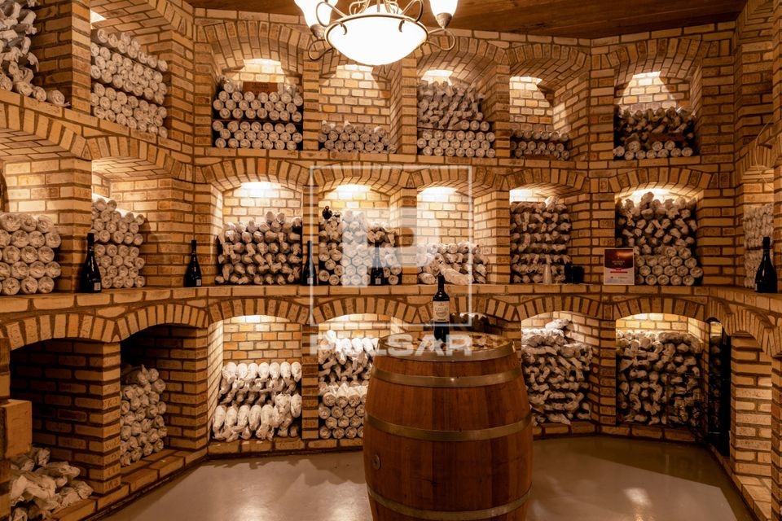

Nossos Vinhos
Na Vinharia Agnello, cada vinho é escolhido para proporcionar uma experiência única. Nossa seleção reúne diferentes estilos, aromas e características para quem deseja conhecer melhor o universo dos vinhos.
Conheça algumas das opções presentes em nossa seleção e descubra diferentes formas de apreciar essa bebida.

Vinhos Tintos
Reserva Agnello
Um vinho tinto encorpado e marcante, desenvolvido para quem aprecia sabores intensos e uma experiência mais profunda.
Seleção Agnello
Um vinho tinto aromático e equilibrado, pensado para quem procura uma opção elegante e agradável.
Vinhos Brancos
Brisa Agnello
Um vinho branco leve e refrescante, com características que proporcionam uma experiência suave e agradável.
Vinhos Rosés
Rosé Agnello
Um vinho rosé frutado e equilibrado, ideal para quem procura uma experiência leve e delicada.
Conheça nossos vinhos
Confira nossa seleção de vinhos, suas características e preços.
| Vinho | Tipo | Características | Preço |
|---|---|---|---|
| Reserva Agnello | Tinto | Encorpado e marcante | R$ 89,90 |
| Seleção Agnello | Tinto | Aromático e equilibrado | R$ 74,90 |
| Brisa Agnello | Branco | Leve e refrescante | R$ 64,90 |
| Rosé Agnello | Rosé | Frutado e equilibrado | R$ 69,90 |